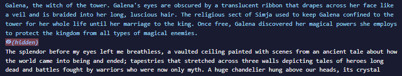
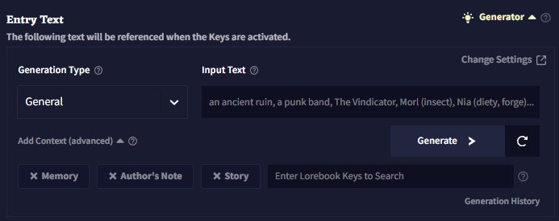

Lorebook
Lorebook은 스토리의 인물, 장소, 사물, 세력 및 기타 다른 내러티브적 요소에 살을 붙일 수 있는 완벽한 장소입니다. 스토리에 각 항목들이 나타날 때마다 AI의 컨텍스트에 추가되는 보충 정보를 위한 저장소라고 생각해도 됩니다. 내부에는 새로운 로어lore 항목을 생성할 수 있는 툴도 있습니다.

좌측 상단의 버튼으로 로어북을 Import하고 Export 할 수 있습니다. Image embed 버튼으로 .png 이미지 파일 내부의 로어북을 삽입embed할 수도 있습니다. 다른 사람과 로어북을 공유하기 매우 좋은 방법입니다!
아래의 이미지는 삽입된embedded 로어북 항목의 예시입니다. 이 이미지를 다운로드해보고 이것이 어떻게 작동하는지 확인해보십시오!

Goose tip: NovelAI Discord에는 NovelAI 커뮤니티가 만든 여러 로어북과 기타 창작물로 가득한 컨텐츠 공유 채널이 있어요!
 Selection 아이콘은 삭제할 여러개의 항목을 선택하거나 내보낼 항목을 선택하는데 사용됩니다.
Selection 아이콘은 삭제할 여러개의 항목을 선택하거나 내보낼 항목을 선택하는데 사용됩니다.
 Sort 아이콘은 항목을 알파벳순이나 최신순으로 정렬할 때 사용됩니다.
Sort 아이콘은 항목을 알파벳순이나 최신순으로 정렬할 때 사용됩니다.
 Search 아이콘은 검색을 할 때 사용됩니다.
Search 아이콘은 검색을 할 때 사용됩니다.
Entries
Entries는 로어북의 메인입니다. 각 항목은 자신만의 고유한 활성화 키를 갖고 있고, 최근의 컨텍스트에서 해당 키가 발견되면, 해당 항목의 텍스트가 컨텍스트에 삽입되게 됩니다.

Delete 버튼은 선택된 엔트리를 삭제하고, Duplicate 버튼은 선택된 엔트리를 복사합니다.
Entry title은 정리 목적으로만 사용되며 AI에게는 보이지 않습니다. 그렇기 때문에 사용자는 항목 텍스트 내부 어딘가에 항목의 제목entry title을 넣어야 합니다. 그렇지 않으면 AI는 이 항목이 어떤 것에 관한 것인지 알지 못할 것입니다.
항목 우측의  Enabled 토글은 해당 항목이 활성화되어 있는지를 결정합니다. Disabled 항목은 키가 트리거되어도 컨텍스트에 삽입되지 않을 것입니다.
Enabled 토글은 해당 항목이 활성화되어 있는지를 결정합니다. Disabled 항목은 키가 트리거되어도 컨텍스트에 삽입되지 않을 것입니다.
Entry Text는 해당 항목이 활성화되었을 때 컨텍스트에 들어갈 텍스트입니다.
Activation Keys는 최근 이야기에서 발견되었을 때 로어북을 활성화시키는 단어나 문구입니다. 키는 대소문자를 구분하지 않습니다.
/로 시작되고 끝나는 키는 정규표현식으로 평가됩니다. 이 정규표현식은 대소문자를 구분하고 다음과 같은 플래그를 지원합니다: i, s, m, u. 만약 키가 플레이스홀더의 일부라면, 첫번째 / 앞, 즉 가장 앞에 $를 추가하세요.
Always On이 켜져있다면, 해당 항목은 최근 스토리에서 키가 발견되는 것과는 상관없이 항상 컨텍스트에 삽입됩니다.
 Hide 버튼은 해당 항목을 숨김처리하여 별도로 공개표시를 하지 않는한 항목의 내용을 볼 수 없게 만듭니다. 해당 기능은 다른 사람과 공유할 목적의 시나리오를 만들 떄 유용하며, 플레이어에게 세부 정보를 숨길 수 있도록 해줍니다.
Hide 버튼은 해당 항목을 숨김처리하여 별도로 공개표시를 하지 않는한 항목의 내용을 볼 수 없게 만듭니다. 해당 기능은 다른 사람과 공유할 목적의 시나리오를 만들 떄 유용하며, 플레이어에게 세부 정보를 숨길 수 있도록 해줍니다.
숨겨진 항목은 컨텍스트 뷰어에서도 가려집니다.

Generator
로어북을 작성하고 싶지만 어디서부터 시작해야 할지 감이 안 오십니까? 그렇다면 AI가 그 빈칸을 채울 수 있도록 해보십시오!
Lore Generator는 사용자가 생각할 수 있는 모든 캐릭터, 사물, 장소나 개념에 대한 로어북을 만들수 있게 해주는 강력한 도구입니다. 일단 리스트에서 항목의 타입을 선택하고 생성하고 싶은 내용을 입력한 후에 생성generator을 누르십시오. 에디터에서와 마찬가지로 이미 작성된 로어북 항목에, AI에게 텍스트를 추가로 입력하라고 시킬 수도 있습니다.

Generation Type은 제네레이터가 특정한 항목의 타입을 생성하는데 영향을 줍니다. 클릭하여 드롭다운을 열고 타이핑을 하고, 엔터를 침으로써 사용자 정의 타입을 설정할 수 있습니다.
Input Text는 제네레이터가 사용하는 프롬프트입니다. "Fogwood Keep" 같은 이름이나 "an enthusiastic merchant"과 같은 짧은 설명이 가장 잘 작동합니다. 항목을 더 자세히 설명하기 위해 소괄호로 태그를 추가할 수도 있습니다. 에시: "Black Skull Fleet (pirates, space)"
**Add Context (advanced)**를 사용하여 메모리나 작가노트, 최근의 스토리(~2500자) 혹은 다른 로어북 항목을 컨텍스트에 포함시켜 항목을 생성할 때 해당 정보를 사용할 수 있도록 할 수 있습니다.
Generation History는 로어북 제네레이터의 최근 출력 50개를 보여줍니다. 페이지를 새로고침하면 삭제됩니다.
 Change settings를 클릭하여 로어북 제네레이터에 사용된 모델과 세팅 프리셋을 바꿀 수 있습니다.
Change settings를 클릭하여 로어북 제네레이터에 사용된 모델과 세팅 프리셋을 바꿀 수 있습니다.
Placement
Placement 탭에서는 스토리 컨텍스트에 로어북 항목이 삽입되는 위치와 방법을 바꿀 수 있습니다.
Note: Placement 탭은 숙련된 사용자를 위한 탭입니다. 해당 기능의 사용 방법과 효과를 이해하고 있는 경우에만 placement 값을 바꾸십시오.

Search Range는 키를 검색할 스토리의 글자의 수 입니다. 최대값은 10000입니다.
Key-Relative Insertion은 컨텍스트 내에서 검색되는 로어북의 마지막 키에 대해 상대적으로 로어북 항목을 삽입하게 합니다.1
양수 Insertion Position은 키 뒤에 항목을 삽입합니다.
음수 Insertion Position은 키 앞에 항목을 삽입합니다.
해당 설정이 켜진 항목은 일반적으로 스토리 컨텍스트(기본적으로 0)보다 낮은 Insertion Order를 갖고 충분한 양의 예약된 토큰을 가져야 합니다. 대량의 상대적으로 삽입된 로어북 항목은 컨텍스트 생성을 느리게 할 수도 있습니다.
Cascading activation이 켜지면 해당 로어북 항목은 비(非)스토리 컨텍스트 항목에서 키를 검색할 것입니다. 비(非)스토리 컨텍스트 항목에서는 검색 범위가 고려되지 않으며, 활성화를 일으킨 항목의 텍스트가 컨텍스트 내에 있을 것이라는 것이 보장되지 않습니다.2
Prefix는 로어북의 내용이 트리밍된 후 컨텍스트에 삽입하기 전에 항목 앞에 추가되는 텍스트입니다.3
Suffix는 로어북의 내용이 트리밍 후 컨텐스트에 삽입하기 전에 항목 끝에 추가되는 텍스트입니다.3
Token Budget은 로어북 항목이 사용할 수 있는 컨텍스트의 최대토큰의 양입니다.
0과 1(1은 제외)사이의 십진수 소수점을 입력하면 최대 컨텍스트 사이즈(최대 토큰 - 출려 길이)의 백분율로 해석될 것입니다.
Reserved Tokens은 항목이 자체적으로 예약할 수 있는 컨텍스트 토큰의 양입니다. 모든 예약은 항목이 컨텍스트에 배치되기 전에 이루어집니다. 실제 해당 항목이 포함하는 토큰의 양보다 더 많은 토큰을 예약하지는 않습니다. 예를 들어, 예약된 토큰이 200으로 설정되고 로어북 항목이 100 토큰이라면, 100개의 토큰만 예약됩니다.
0과 1(1은 제외)사이의 십진수 소수점을 입력하면 최대 컨텍스트 사이즈(최대 토큰 - 출려 길이)의 백분율로 해석될 것입니다.
로어북의 항목은 컨텍스트가 빌드되기 전에, 설정된 Insertion Order에 따라 처리됩니다. 높은 Insertion Order를 가진 항목은 토큰을 예약하고 컨텍스트에 먼저 처리, 삽입됩니다. 두 항목의 Insertion Order가 같다면, 먼저 삽입될 것이라는 보장은 없습니다.4
Insertion Position은 항목이 컨텍스트에 삽입될 위치입니다. 0은 컨텍스트의 최상단, 1은 한단계 아래, 2는 두단계 아래가 되는 식입니다. 음수는 컨텍스트 컨텍스트 최하단부터 계산합니다.. -1은 최하단, -2는 그보다 한단계 위, 그리고 -3은 두단계 위가 되는 식입니다.5
Trim Direction는 전체 항목이 컨텍스트에 맞지 않을 경우do not fit 항목이 잘릴 위치를 설정합니다. 'Do not Trim'으로 설정하면 항목의 텍스트가 컨텍스트가 맞을 때만 항목이 포함됩니다.
Maximum Trim Type은 항목이 잘릴 수 있는 범위입니다.
Insertion Type은 항목을 삽입할 때 컨텍스트를 구분하는 데 사용되는 단위를 결정합니다.
역자주: 로어북의 내용이 설정한 위치가 아니라 마지막으로 검색되는 키의 바로 뒤나 앞에 붙게 하는 기능이다.
역자주: 스토리의 내용뿐만 아니라 메모리나 작가노트까지 로어북 키를 검색한다.
역자주: 만약 로어북 내용이 abcd이고 prefix가 english면, 최종적으로 englishabcd가 컨텍스트에 삽입된다. suffix라면 abcdenglish가 삽입된다.
역자주: 처리하는 순서를 말한다. 값이 높다면 해당 값을 먼저 컨텍스트에 넣는다. 즉, 해당 값이 낮은 로어북은 처리 우선순위가 낮으므로 공간 절약을 위해 삭제될 수도 있다.
역자주: Insertion Order 대로 값을 처리한 후 항목이 삽입되는 위치이다. 예를 들어, 기본값 기준으로 메모리는 Position 0 Order 800, 스토리는 Position -1 Order 0, 로어북은 Position -1 Order 400, 작가노트는 Position -4 Order-400으로 설정되어 있다. 그러므로 일단 메모리를 가장 먼저 컨텍스트에 넣고 위치를 가장 위로 놓는다(메모리). 그리고 로어북을 컨텍스트에 넣고 위치를 하단에 넣는다(메모리-로어북). 그리고 스토리를 컨텍스트에 넣고 위치를 하단에 놓는다(메모리-로어북-스토리). 그리고 Insertion Order가 -400인 작가노트를 컨텍스트에 넣고 -4(가장 아래에서 4번째줄) 위치에 놓게 되는 것이다. 즉, Insertion Order 순서대로 컨텍스트에 넣고 Insertion Position 값에 맞게 위치를 조절하는 것이다. 해당 부분은 Context Viewer의 Stages 란에서 Previous Stage와 Next Stage를 클릭하며 확인할 수 있다.
Phrase Bias
Phrase Bias를 사용하면 항목이 활성화되어 있을 때, AI가 특정 단어나 구문을 생성할 확률을 높이거나 낮출 수 있습니다. 정확한 텍스트를 입력하기 위해서는 bias를 {중괄호}로 감싸고, 토큰 ID(토크나이저에 지정된)를 입력하기 위해서는 [대괄호]로 감싸십시오. bias는 대소문자를 구분합니다.

Import와 Export 버튼을 클릭하여 phrase Bias를 .bias 파일로 가져오고 내보낼 수 있습니다.
Bias는 group으로 구성되어 있고, 각 그룹은 Bias 값을 갖고 있습니다. 이 bias 값은
Categories
Categories는 로어북 항목을 그룹으로 정리하는데 사용됩니다.
Default 탭에서는 해당 카테고리 내에서 만든 새 항목의 기본 배치 설정을 바꾸거나 기존의 모든 항목을 업데이트할 수 있습니다.
Subcontext탭에는 Create Subcontext 토글이 있습니다. 이 토글을 활성화하면 해당 카테고리 내의 로어북 항목들이 그룹화되고, 이 그룹화된 항목들은 선택된 설정을 이용하여 컨텍스트에 삽입됩니다.

Phrase Bias 탭은 개별 엔트리 항목의 phrase bias 탭과 동일한 기능이지만, 카테고리 레벨에서 설정된 bias는 해당 카테고리 내의 모든 항목이 활성화가 될 때 활성화된다는 점이 다릅니다.